🎬 DEMO 에만 반영 · 🛒 판매본 그대로(승인 전 옮기지 않음). 모든 화면은 서버 반영 뒤 다시 불러온 실제 노션 화면(1526px = 오너 화면 폭, 폰은 375 · 390 · 430).
R6·1
HOME 첫 화면 · R5 → R6
메뉴 가운데 그대로
첫 화면(1526 × 854): 제목 · 사진 띠 · 「폰에서는 MAIN BOARD MOBILE」 · 메뉴 첫 줄까지. 메뉴는 두 줄을 한 칸에 위아래로 쌓아(칸마다 그림 두 장) 줄 사이가 R5 보다 24px 줄었습니다(줄 간격 272 → 248px, 그림 사이 세로 94 → 70px · 가로 62px). 가운데 정렬 0px 그대로.
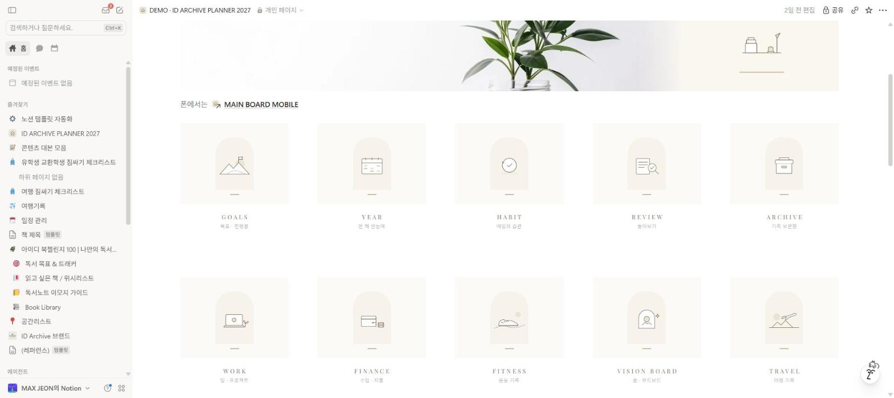
R5
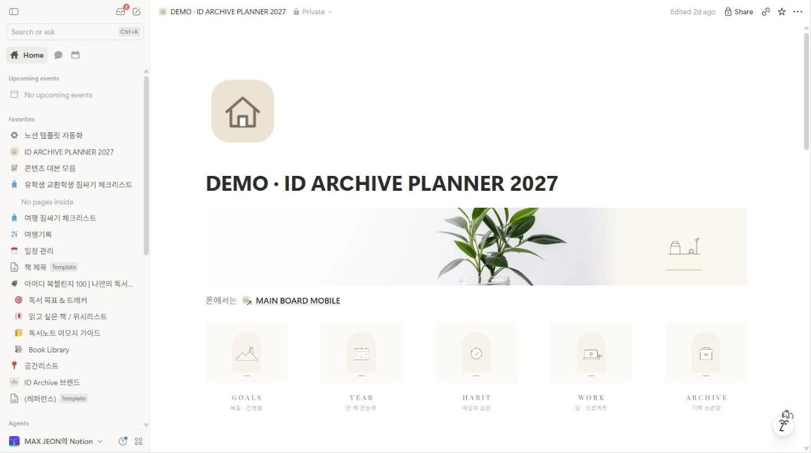
R6 첫 화면 (1526px)
R6·2
MENU 2 × 5 자세히
짝 맞춘 순서
위 줄 GOALS · YEAR · HABIT · WORK · ARCHIVE / 아래 줄 VISION BOARD · REVIEW · FITNESS · FINANCE · TRAVEL — 위아래가 짝(꿈↔목표, 해↔돌아보기, 습관↔운동, 일↔돈, 기록↔여행). 폰에서는 칸 순서대로 GOALS → VISION BOARD → YEAR → REVIEW … 로 짝끼리 이어집니다. 그림 154 × 116 · 이름표와 16px · 칸 폭 170.
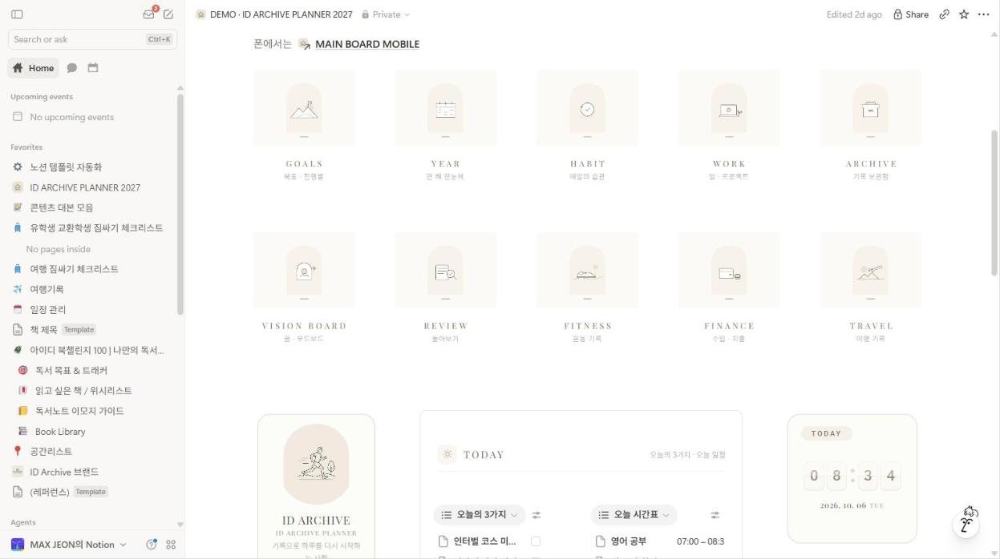
데스크톱 1526px
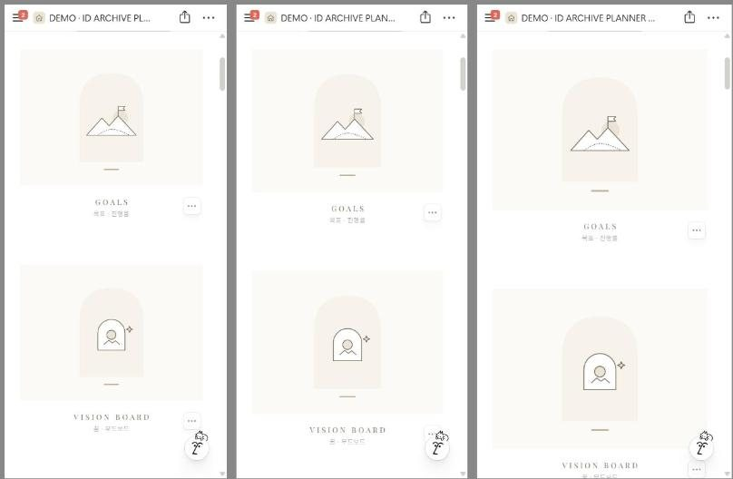
폰 375 · 390 · 430 — GOALS 다음 VISION BOARD, 이름 가운데
R6·3
MENU 사진 — 가로 · 정사각 · 세로
사진 → 바꾸기 → 내 사진
기본은 그대로 「그림 ⋯ → 바꾸기 → 내 사진」. 가로 사진(4:3 · 3:2)은 칸에 꽉, 정사각은 칸의 약 75%, 세로(3:4 · 2:3)는 약 50~56% 폭으로 왼쪽에 붙습니다(노션 그림 블록은 자르기가 없음). 안내: 「메뉴 사진은 가로형 4:3 또는 3:2 권장」. 세로 · 정사각 사진을 쓰고 싶을 때만 선택 도구 MENU PHOTO 4:3(사진은 기기 밖으로 나가지 않음)로 잘라 올리면 아래처럼 모두 꽉 찹니다. 기본 그림으로 되돌리기: Theme Studio 「HOME 메뉴 사진 모두 기본 그림으로」 버튼(연결된 플래너), 또는 그 사진 설명에 「기본」 — 가이드북 TIP 에 둘 다 적어 둠.
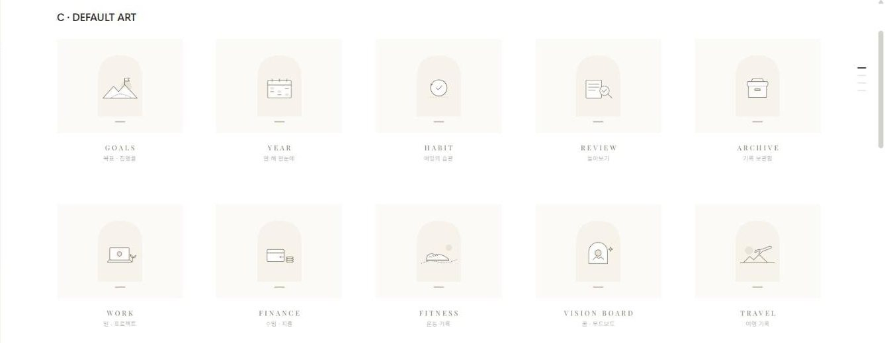
기본 그림 (BUYER QA 시제품)
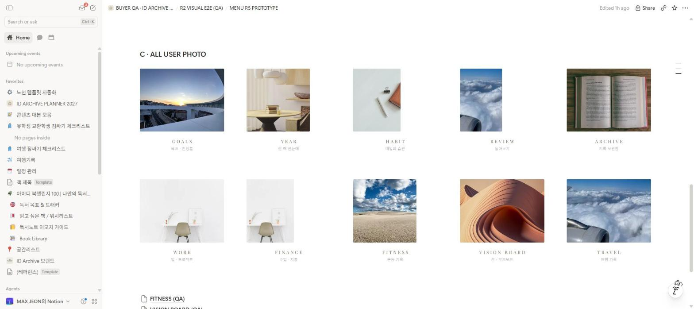
가로 · 정사각 · 세로 섞음 — 세로/정사각은 좁게 · 왼쪽
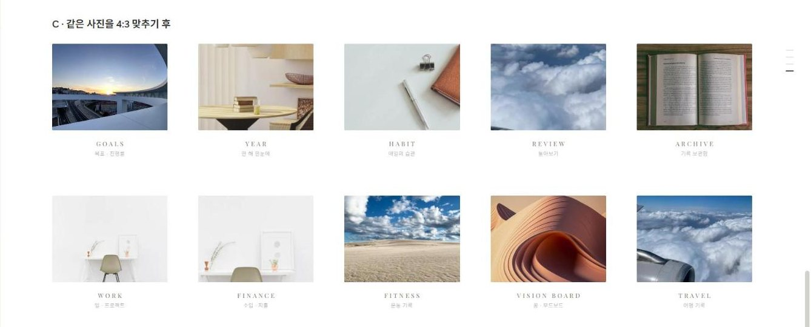
같은 사진을 4:3 으로 맞춘 뒤 — 모두 꽉
R6·4
HOME 대시보드 — 파란 「새로 만들기」 0
1526px 실측
HABIT 목록을 좁은 칸(304px)에 두고 「+ 습관」을 옆으로 — 노션은 목록이 약 308px 보다 좁으면 파란 버튼을 숨깁니다. 좁은 칸에서 일곱 점이 잘려 「주간 달성률」 고리로 바꿈(목표 목록과 같은 모양). 습관 체크는 줄의 「오늘 체크」 그대로. CURRENT GOAL · FOCUS 반칸 제목이 「CURRENT GO」로 잘리던 것 → 좁은 칸에서는 요약을 숨기고 자간을 줄임. 오른쪽 열이 가장 길어 D-DAY 를 「HOME 추가 모듈」로, VISION 핀을 6장 두 줄로 — 세 열 끝 차이 267 → 약 60px.
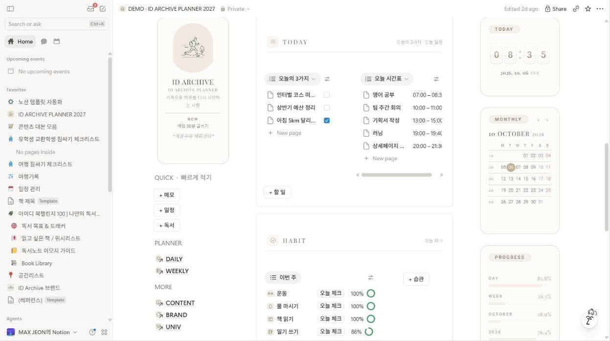
TODAY · HABIT · 시계 · 달력
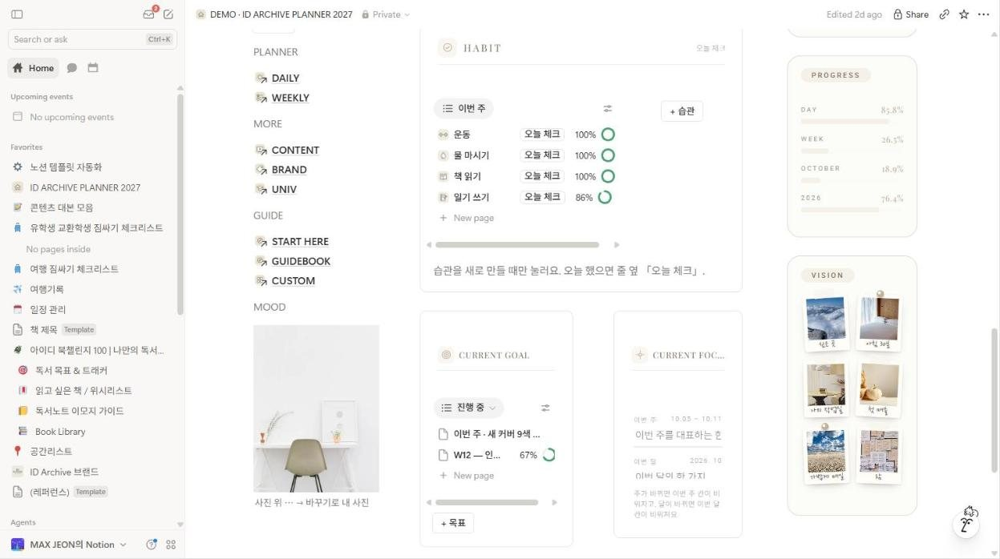
HABIT · GOAL · FOCUS · PROGRESS · VISION
R6·5
HOME 자체 검토 R6 — KEEP · WEAK · FIX
항목
판정
R6
FIRST VIEWPORT
KEEP
제목 · 사진 띠 · 메뉴 첫 줄. 대시보드는 갤러리 때도 첫 화면 밖 — 메뉴 24px 압축
L / C / R BALANCE
FIX → KEEP
열 끝 2452 · 2345 · 2612 → 차이 약 60px (D-DAY 이동 · VISION 핀 6장)
MENU SCALE
FIX → KEEP
줄 간격 272 → 248 · 세로 틈 94 → 70 (가로 62) · 가운데 0px
VISUAL ANCHOR
KEEP
밝은 플립 시계(최신 화면에서 확인) · 사진 띠
WHITE SPACE
KEEP
메뉴 아래 · 열 사이 56px
CARD RHYTHM
KEEP
큰 TODAY → HABIT → 반반 GOAL · FOCUS
TYPOGRAPHY
FIX
좁은 반칸 제목 잘림 → 요약 숨김 · 자간 줄임 · 아주 좁으면 아이콘 숨김
PHOTO DISTRIBUTION
KEEP
위 띠 · 메뉴 · 왼쪽 MOOD · 오른쪽 VISION
RIGHT WIDGET WEIGHT
FIX
시계 · 달력 · 진행률 · VISION — D-DAY 는 추가 모듈로
CENTER DENSITY
KEEP
HABIT 안내 한 줄은 목록 아래로
ALIGNMENT
KEEP
메뉴 그림 = 이름 = 칸 가운데
PREMIUM IMPRESSION
WEAK → FIX
1526px 에서 파란 버튼 0. 화면이 아주 넓으면(약 1700px 이상) HABIT 목록이 넓어져 버튼이 다시 보일 수 있음 — 노션 동작(기록)
R6·6
VISION FINAL — 장면 → 목표 → 진행
DEMO
위계: ① 핀 보드(내가 바라는 장면) | 목표 진행률 + DREAM PROCESS 3단계(장면 → 1 · 5 · 10년 목표 카드 → 할 일 · 습관으로 진행률) ② LIFE AREAS ③ 1 · 5 · 10 YEAR 하나의 갤러리(기간으로 묶음 — 「↗ GOALS」 제목과 파란 버튼 세 번 반복을 하나로). 핀 사진 바꾸기는 보드 위 ⚙ → 사진 고르기, 목표 카드 사진은 카드 표지(커버).
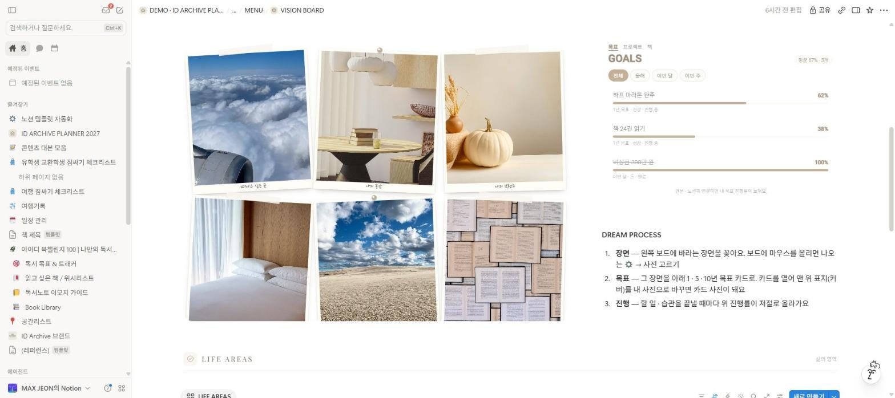
핀 보드 · 목표 진행률 · DREAM PROCESS
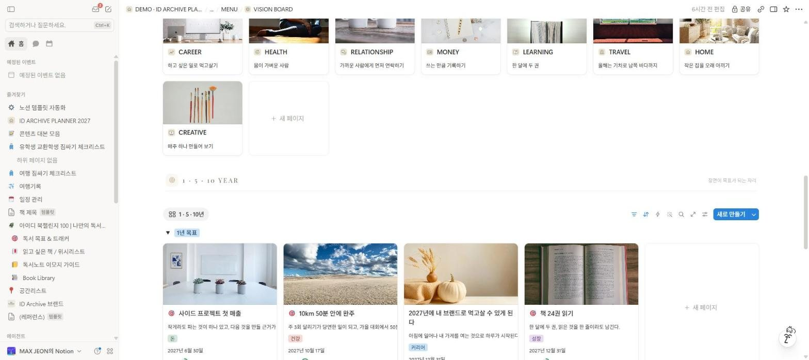
LIFE AREAS · 1 · 5 · 10 YEAR (기간별 묶음)
R6·7
FITNESS FINAL
DEMO
순서: TODAY 운동 · THIS WEEK 움직임 · ACTIVITY DAYS → 건강 목표 → WORKOUT LOG · MONTHLY. 고친 것: ACTIVITY DAYS 달력이 셋째 주에서 잘리던 것(넓은 칸에서 칸이 상자보다 커짐) → 칸 높이를 상자에 맞춰 한 달 전체가 보이게. 운동 기록 표의 빈 열(실제 시간대 · 실제(시간)) 숨김 → 제목 · 날짜 · 완료. 따로 적는 운동 표 없음 — 습관 「운동」 · 할 일 영역 「건강」 · 목표를 그대로 씀.
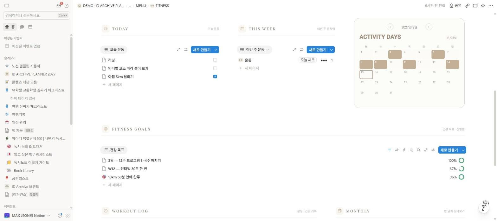
한 달 전체가 보이는 ACTIVITY DAYS
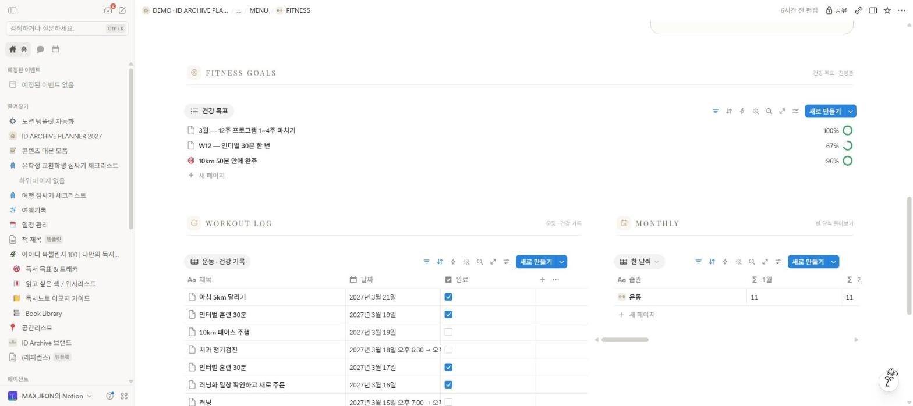
건강 목표 · 운동 기록 · 한 달씩
R6·8
MONTHLY · WEEKLY (최신 화면)
구매자 기록 그대로
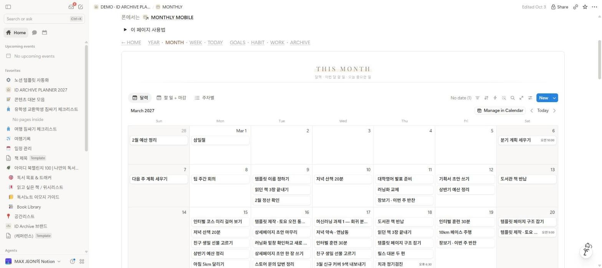
MONTHLY — 달력 · 할 일 + 마감 · 주차별
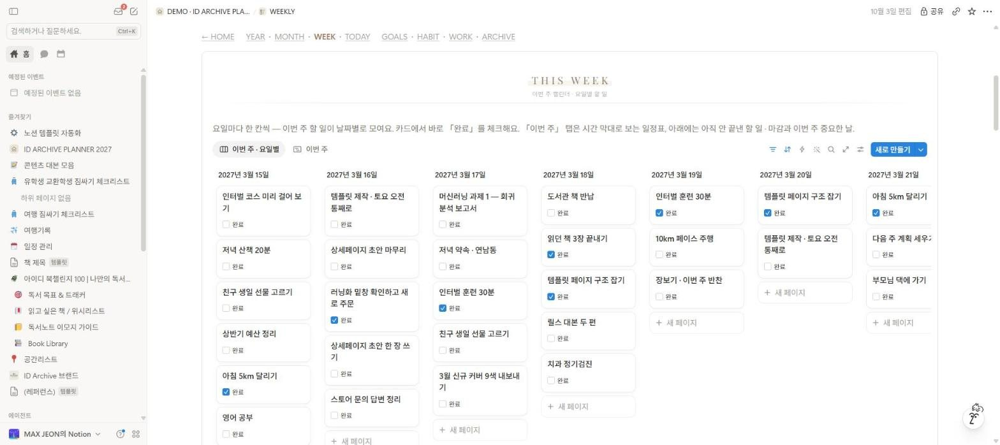
WEEKLY — 요일별 · 「완료」 바로 체크
R6·9
MOBILE — AUTOMATED MOBILE VIEWPORT PASS
옆 넘침 0 · 6쪽 + MOBILE 쪽 × 3폭
TODAY(DAILY) · HABIT · WORK · FINANCE · UNIV · ARCHIVE 와 HOME 을 375 · 390 · 430 에서 다시 확인 — 옆 넘침 0. 폰에서 데스크톱 쪽은 왼쪽 안내 칸이 먼저 오고, 맨 위 「폰에서는 … MOBILE」 이 폰용 쪽으로 이어집니다(MOBILE 쪽은 첫 화면에 바로 할 일 · 적기 버튼). 실제 폰 확인은 오너 최종 확인으로 남김.
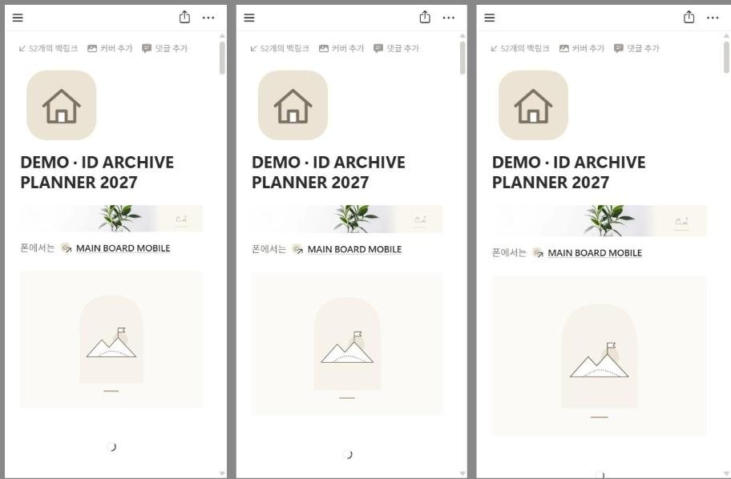
HOME
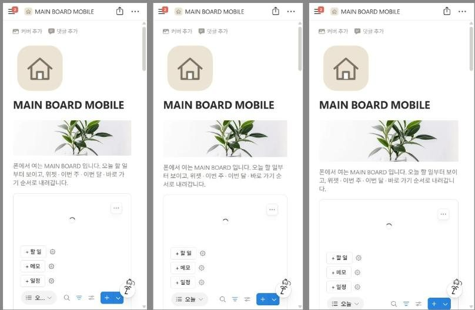
MAIN BOARD MOBILE
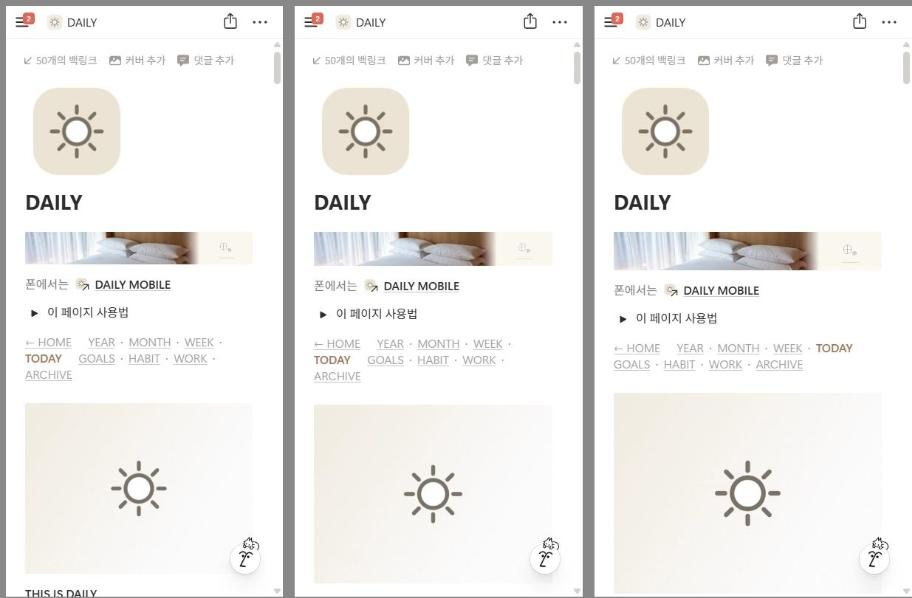
TODAY (DAILY)
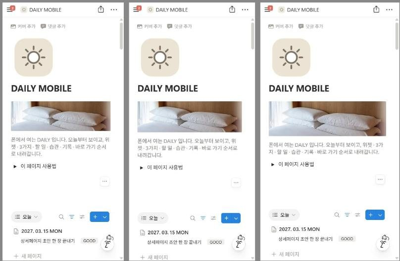
DAILY MOBILE
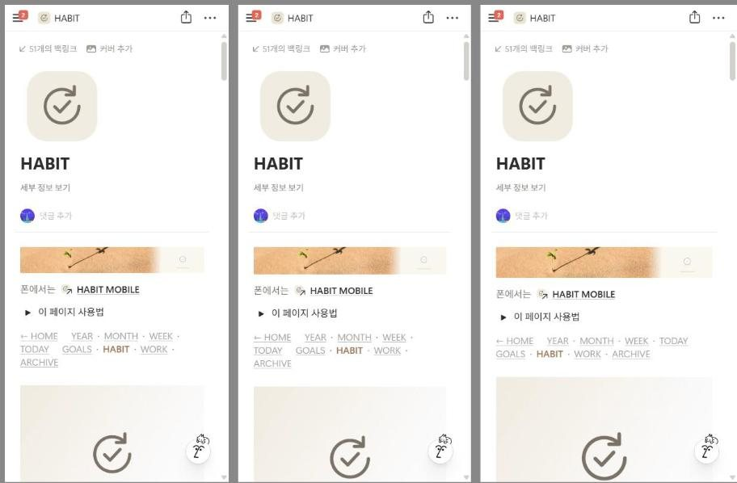
HABIT
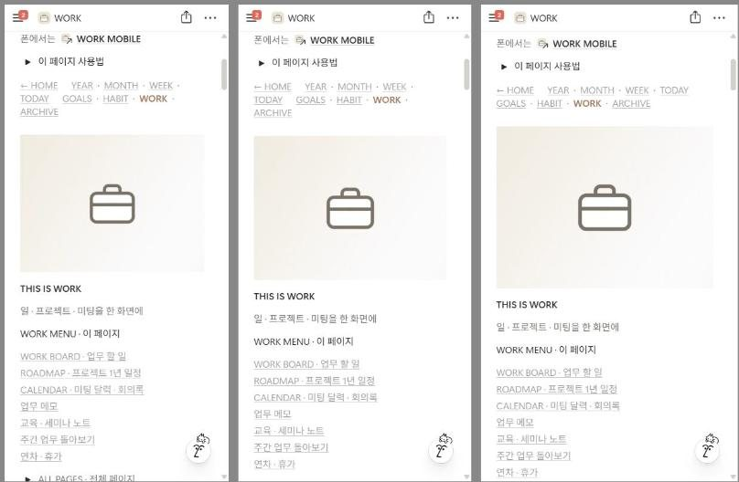
WORK
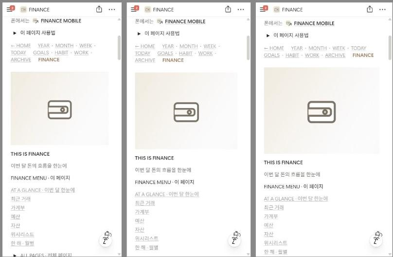
FINANCE
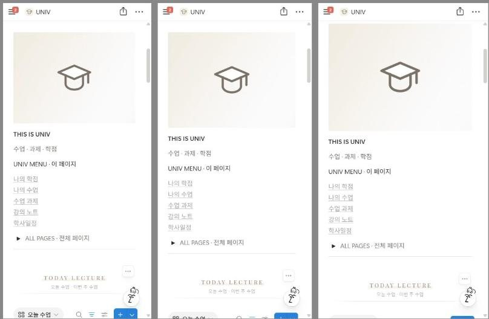
UNIV
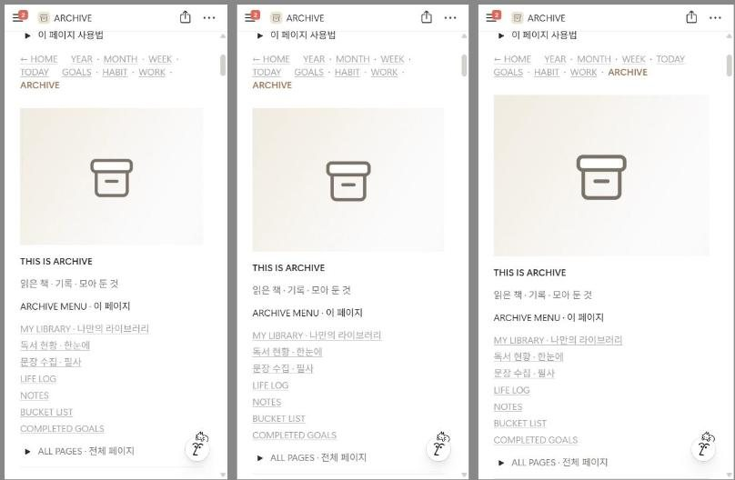
ARCHIVE
R6·10
FRESH DUPLICATE · 링크 전수 검사
원본으로 가는 보이는 링크 0
DEMO 전체를 새로 복제(9,168 블록)한 뒤 복제본 안의 모든 블록 · 표 · 보기 · 템플릿 · 줄 · 버튼 동작(블록 버튼 33개 · 표 버튼 속성 2개)을 서버에서 읽어 「안의 id 가 복제본 밖을 가리키는지」 검사. 실제 클릭: 복제본 GOALS 위 줄 YEAR → 복제본 YEAR. 검사 뒤 복제본은 휴지통(영구 삭제 아님). 판매본 마지막 수정 10-02 그대로.
종류
결과
내용
그림 메뉴 링크
10 / 10
DUPLICATION-SAFE INTERNAL — 복제본 페이지
글 링크(상대 · 「이 페이지」 위치 포함)
296
모두 복제본 안. 노션 절대 주소 링크 0
페이지 언급 · 관계 값
3,492
모두 복제본 안
보기 · 표 · 템플릿 · 버튼 동작
1,149 · 38 · 22 · 59
모두 복제본의 표를 가리킴
외부 주소
1,193
EXTERNAL INTENTIONAL — 위젯 · 사진 · 방문지 안내(visitkorea)
숨은 예전 값
53
BACKUP-LEGACY — MONTHS 12줄의 지워진 속성 「~DnO」(표에 없는 열 · 화면 · 링크로 보이지 않음)가 _BACKUP WEEKLY 를 가리킴. 증거 기록, 손대지 않음
지워진 줄의 정렬 흔적
3
보기 정렬 목록에 남은 휴지통 줄 id — 보이지 않음
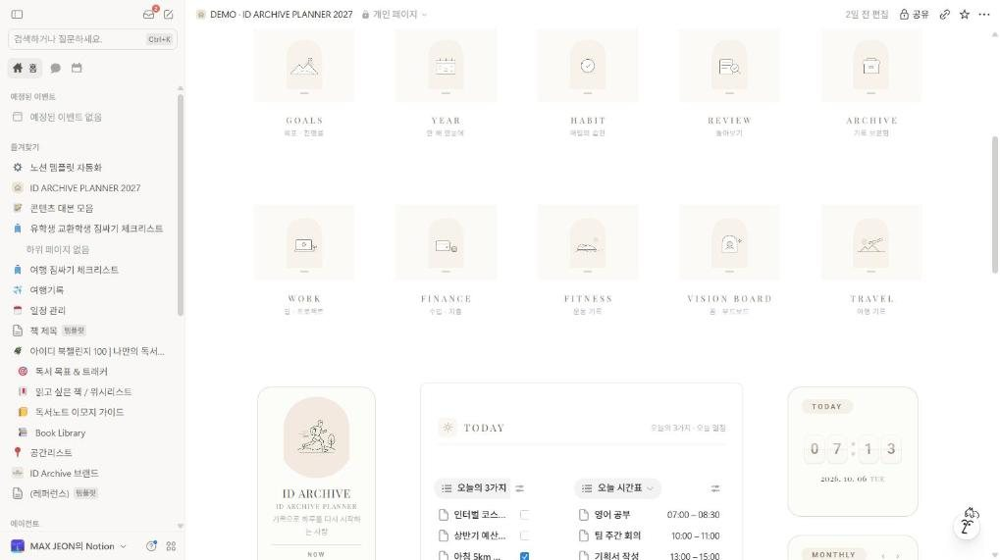
새 복제본 HOME (검사 뒤 휴지통)
R6·11
ACTIVE HOME · OPTIONAL HOME MODULES · WIDGET LIBRARY
CUSTOM 맨 위에 세 역할을 한 줄씩(각 줄은 복제해도 따라가는 링크). D-DAY 도 「HOME 추가 모듈」로. 날씨 · 음악은 라이브러리에 있어 HOME 사본은 두지 않음. 「위젯 52가지」 → 56가지로 맞춤. 함께 고친 숨은 결함: 노션 임베드 11개가 「보이는 주소」와 「정본 주소」가 달라 다음 테마 적용 때 되돌아갈 수 있었음(MAIN BOARD MOBILE 시계 모양 · HOME 제목 아이콘 등) → 정본을 보이는 주소로 바꿔 새 블록으로, 다시 검사 0.
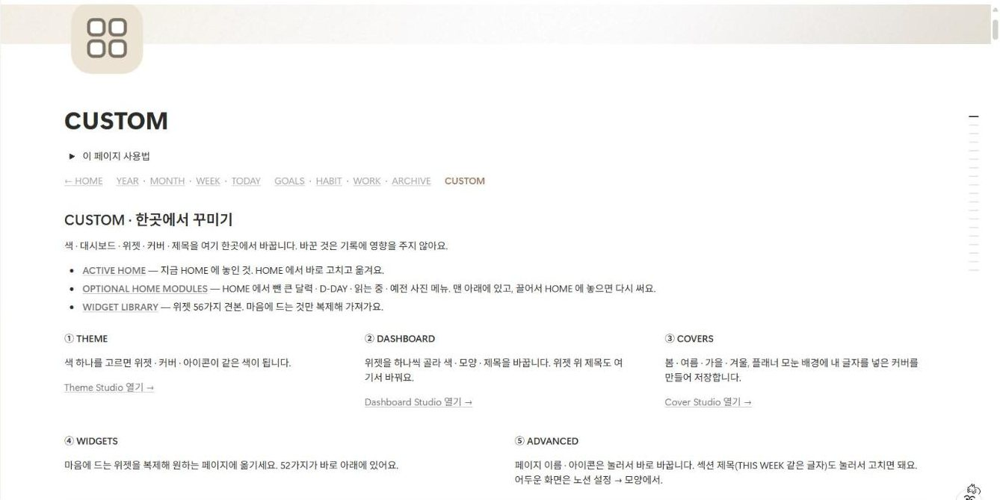
R6·12
SALE PROMOTION GATE
판매본 이동 없음
게이트
상태
근거
LATEST RENDER VERIFIED
PASS
서버 반영 뒤 새로 불러온 화면만 사용(반영 지연 30~60초 · 오래된 화면은 버림)
HOME R6 VISUAL
오너 확인
R6·1 · R6·4 · R6·5
CENTERED MENU VISUAL
PASS
0px · 줄 간격 압축 · 폰 순서
VISION · FITNESS
PASS (DEMO)
R6·6 · R6·7
REMAINING MOBILE
AUTOMATED MOBILE VIEWPORT PASS
R6·9 (실제 폰은 오너 최종)
FULL ABSOLUTE-LINK AUDIT
PASS
노션 절대 링크 0 · 숨은 예전 값 53 기록
FRESH DUPLICATE
PASS
R6·10
OWNER VISUAL REVIEW
대기
승인 전 판매본으로 옮기지 않음
R5 · 2026-10-06 — 메뉴 가운데 정렬 · VISION · FITNESS · 폰
🎬 DEMO 에만 반영 · 🛒 판매본 그대로(승인 전 옮기지 않음). 아래 R2 화면은 그 전 기록입니다.
R5·1
MENU · 지금(A) → 새 그림 메뉴(C)
그림 가운데 = 이름 가운데 = 칸 가운데
A(갤러리)는 이름이 왼쪽에 붙고 「+ 새 페이지」 · 파란 「새로 만들기」가 늘 보였습니다. C는 노션 그림 블록(누르면 그 페이지로 · 복제해도 새 페이지를 따라감) + 가운데 이름표. 10칸 모두 칸 가운데와 0px 차이(데스크톱), 폰 375 · 390 · 430 에서도 0px. 아래 확대: A 는 이름이 칸 가운데보다 70px 왼쪽, C 는 0.5px.
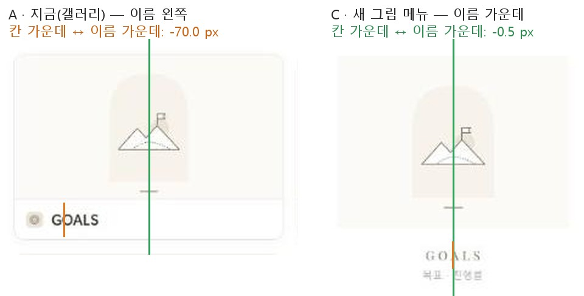
초록 = 칸 가운데 · 주황 = 이름 글자 가운데
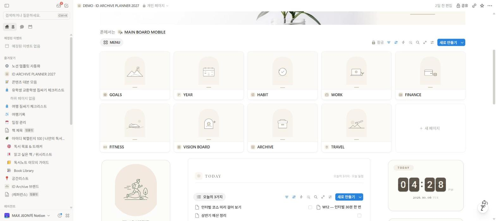
A · 지금(갤러리)C · DEFAULT MENU (DEMO HOME)
R5·2
USER PHOTO MIX · ALL USER PHOTO
사진 바꾸기 → 끝
사진 바꾸기: 그림에 마우스 → ⋯ → 「바꾸기」 → 내 사진. 이름 · 누르면 가는 곳 · 가운데 · 칸 크기 그대로. 칸은 4:3 — 가로 사진(폰 가로 4:3 · 3:2 · 16:9)은 꽉 차고 가운데. 세로 사진은 노션 그림 블록이 자르기를 못 해서 칸보다 좁게 · 왼쪽으로 보입니다(FINANCE 칸이 세로 사진 예). 기본 그림으로 되돌리기: 그 사진 설명에 「기본」을 적고 테마 적용 → 지금 테마의 그 칸 그림으로(BUYER QA 실제 시험 통과).
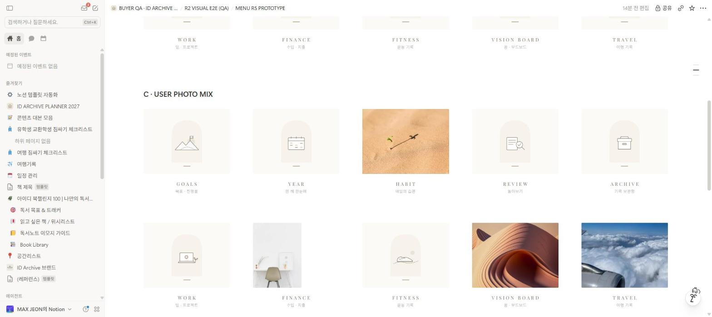
USER PHOTO MIX (BUYER QA)
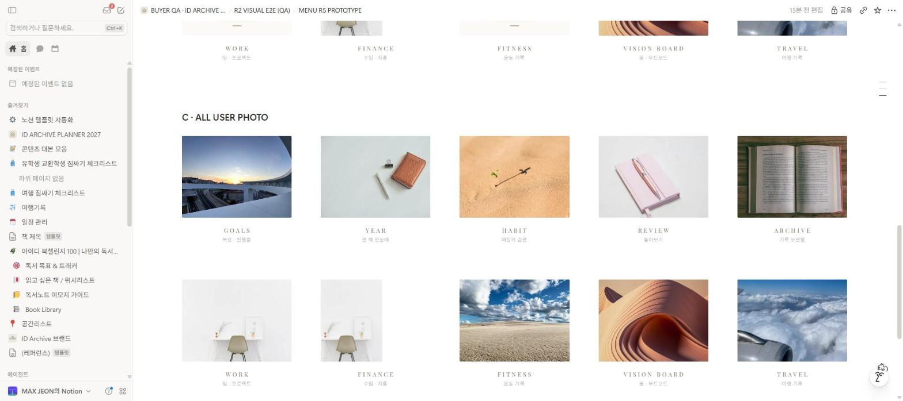
ALL USER PHOTO — FINANCE 만 세로 사진
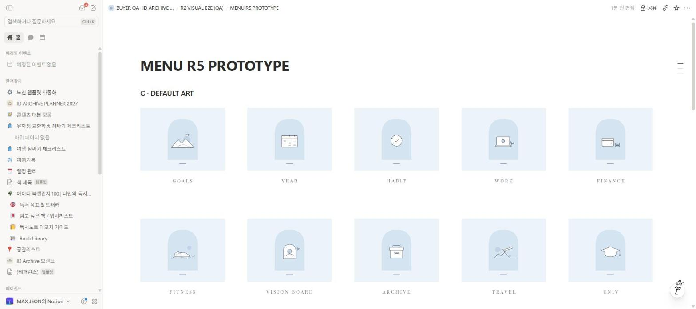
테마 파랑 적용 — 기본 그림 · 이름표 색이 따라가고 사진은 그대로
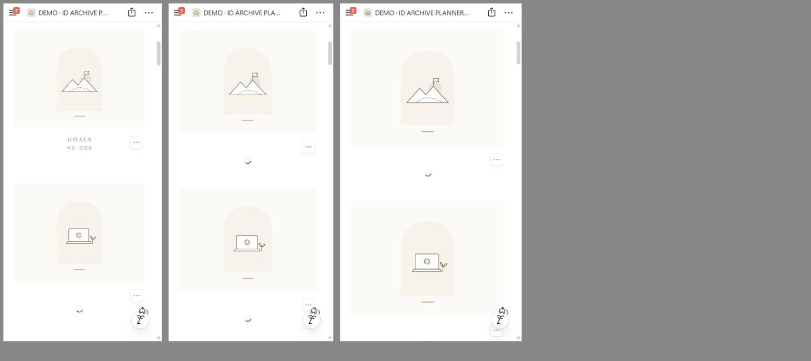
폰 375 · 390 · 430 — 그림이 칸을 꽉 채워 이름과 같은 가운데
R5·3
FITNESS — 움직임 페이지
DEMO
왼쪽 흰 안내 칸을 빼고, 맨 위를 「오늘 운동 · 이번 주 움직임 · ACTIVITY DAYS(운동한 날 달력)」 한 줄로. 그 아래 건강 목표 진행률, 운동 기록 · 한 달씩.
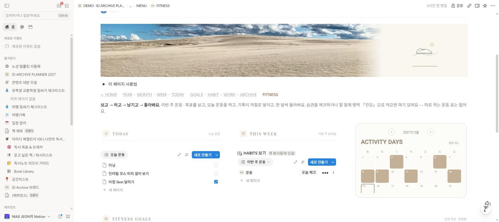
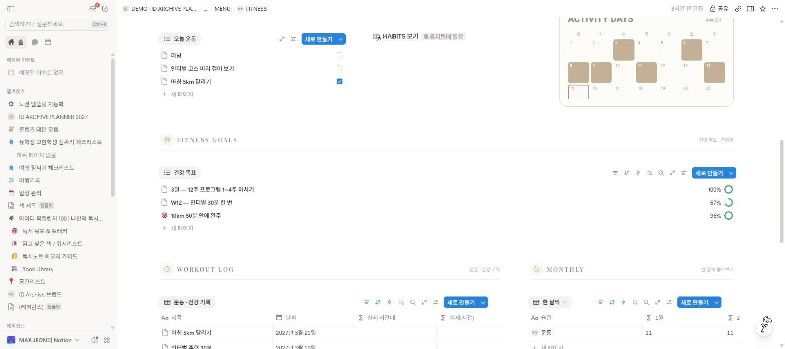
R5·4
VISION — 꿈 · 장면 페이지
DEMO
페이지 전체 폭. 큰 핀 무드보드(6장 · 삶의 영역별 한 장, 카드 없이 벽에 꽂힌 모양) + 목표 진행률, 그 아래 LIFE AREAS 사진 카드 띠, 1 · 5 · 10년 목표(예시 목표의 잎 그림 표지 → 뜻에 맞는 CC0 사진).
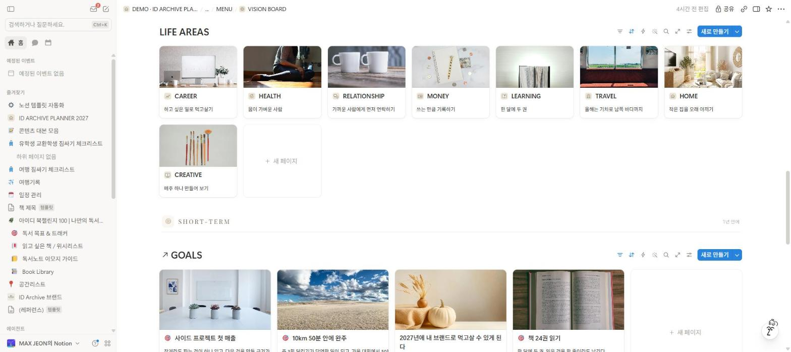
LIFE AREAS 띠 · 1년 목표(사진 표지)
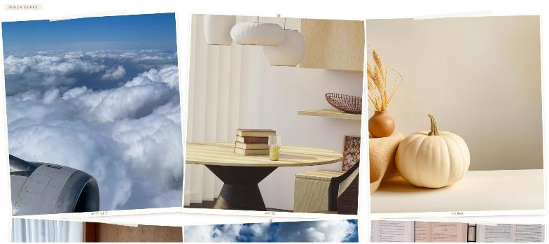
핀 무드보드 — 카드 없이 벽에 꽂힌 모양(위젯 단독 화면)
HOME 오른쪽 위 시계는 같은 플립 모양의 밝은 버전으로 바꿨습니다(노션 쪽 반영 완료 — 화면 캡처는 다음 확인 때 함께).
R5·5
MOBILE · 6 페이지 다시 보기 (375 · 390 · 430)
넘침 0 · 6쪽 × 3폭
TODAY · HABIT · WORK · FINANCE · UNIV · ARCHIVE 모두 옆 넘침 없음. 고친 것: FINANCE 「남은 예산」 숫자가 375 · 390 에서 잘려 「2414」처럼 보이던 것(실제 241,400) → 칸 폭을 맞춰 끝까지 보임 · 옆 칸 금액 조각(「₩40」)이 안 보이게. 한글 모듈 제목 자간(「작 은 습 관」 → 「작은 습관」). GOALS 실천 보드 · 목표 보드 · 프로젝트는 칸을 좁혀 375 에서 다음 칸이 살짝 보이게(옆으로 밀 수 있다는 표시).
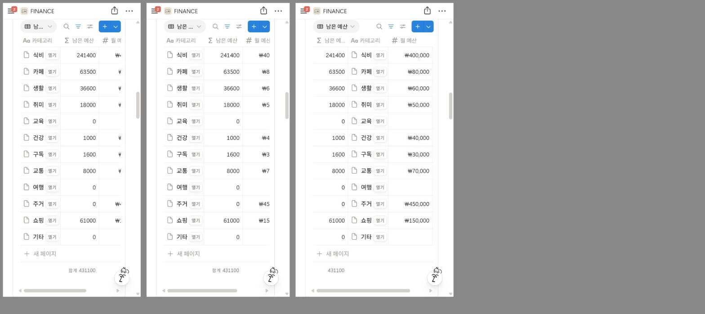
FINANCE — 241400 · 합계 431100 끝까지
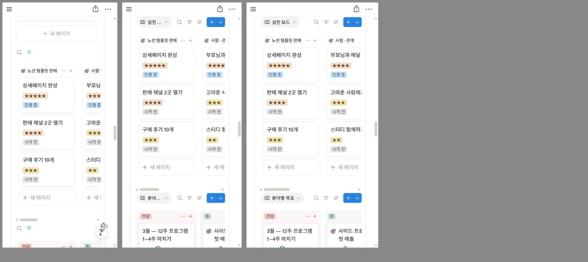
GOALS 실천 보드 — 375 에서 다음 칸이 보임
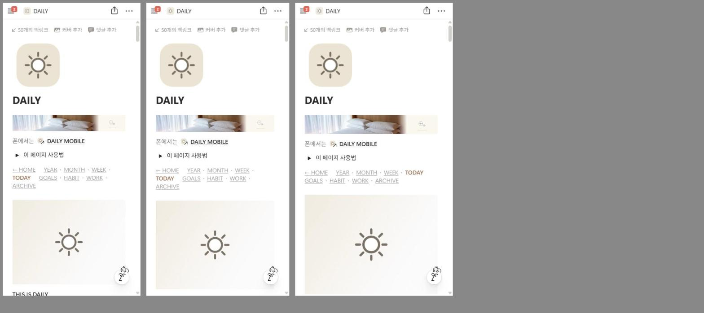
TODAY(DAILY) 첫 화면
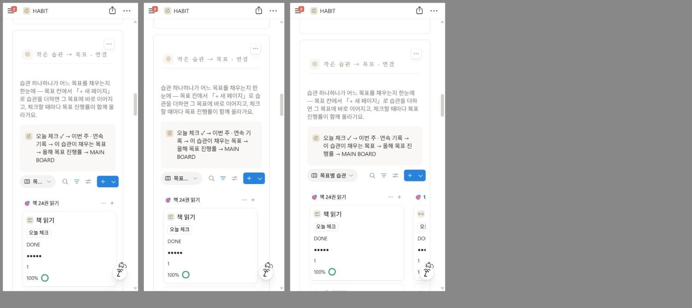
HABIT
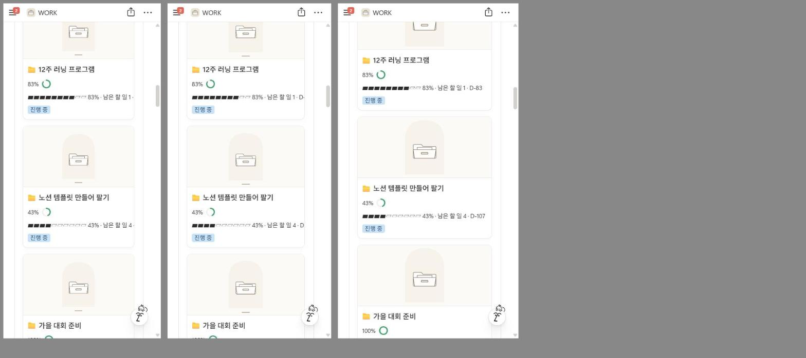
WORK
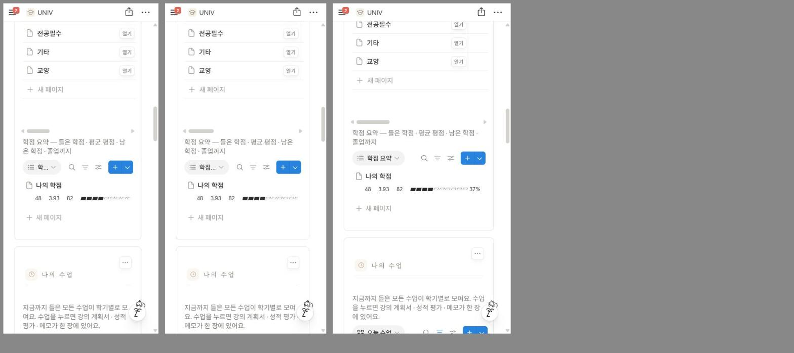
UNIV
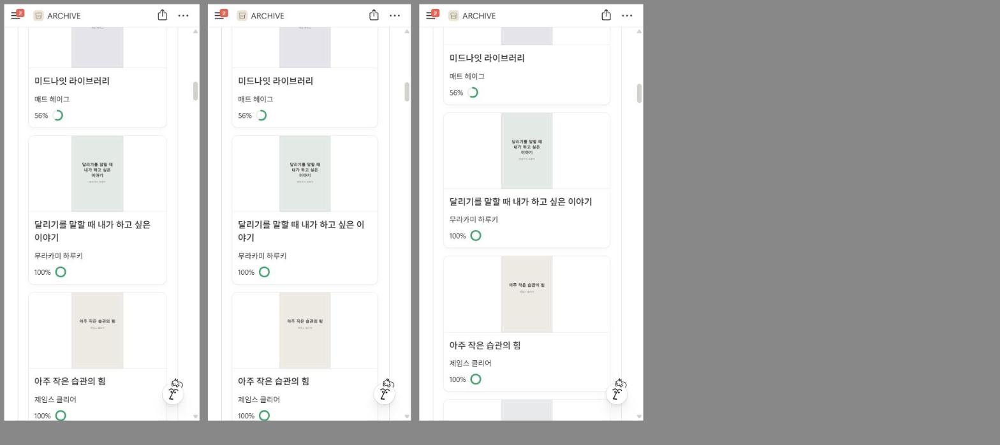
ARCHIVE
R5·6
HOME 자체 검토 — KEEP · WEAK · FIX
항목
판정
R5
첫 화면
KEEP
제목 · 사진 띠 · 메뉴 첫 줄. 메뉴가 갤러리보다 약 190px 높아 TODAY 가 조금 아래로
L · C · R 위계
KEEP
왼쪽 나 · 빠르게 적기 · 길잡이 / 가운데 TODAY · HABIT · 목표 · 포커스 / 오른쪽 시계 · 달력 · D-day · 진행률 · VISION
시선 중심
FIX
짙은 차콜 플립 시계가 페이지에서 가장 어두운 덩어리 → 같은 플립 모양의 밝은 버전(테마 옅은 면 · 진한 숫자)
빈 공간 · 열 끝
KEEP
세 열 끝 높이 차 30px 안쪽
카드 밀도
KEEP
TODAY 두 목록 + 버튼
사진 배치
KEEP
위(띠) · 왼쪽 아래(MOOD) · 오른쪽 아래(VISION)
모듈 리듬
KEEP
큰 TODAY → 가로 HABIT → 반반 GOAL · FOCUS
오른쪽 무게
WEAK→FIX
시계 밝게(위)
메뉴 크기
WEAK
노션 임베드 최소 높이 100px 때문에 이름표 칸이 큼 — 아래 여백이 줄 사이 숨 고르기가 되도록 이름을 위로
글자
FIX
한글 제목 자간
정렬
KEEP
세 열 사이 56 · 57px · 메뉴 0px
고급스러움
WEAK
DB 목록의 파란 「새로 만들기」가 화면에서 가장 센 색 — 노션 기본 버튼이라 숨길 수 없음(플랫폼 한계 · 기록)
R5·7
HOME 에서 뺀 위젯 — 휴지통 보관 안 함
큰 달력(이번 달 일정) · 읽는 중(BOOKS) → 다시 쓸 수 있는 모듈: CUSTOM 페이지 맨 아래 「HOME 추가 모듈」로 옮김(끌어서 HOME 에 다시 놓으면 됨). 날씨 · 음악 → 같은 위젯이 이미 WIDGET LIBRARY 「오늘」 · 「도구」에 있어 HOME 사본만 정리. 예전 갤러리 메뉴(MENU 표 보기)도 지우지 않고 「HOME 추가 모듈」에.
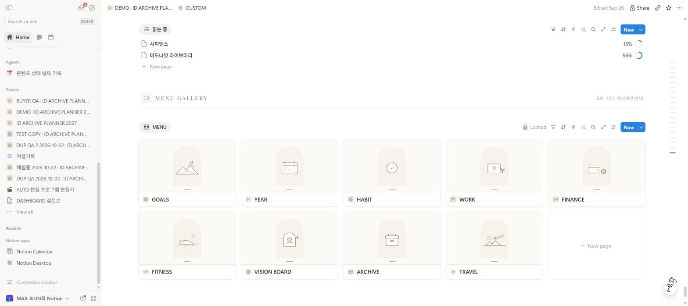
R5·8
새 복제 회귀 — DEMO 전체 복제(9,164 블록)
메뉴 10/10 · 언급 566 · 상대 링크 145
복제본 안의 그림 메뉴 링크 10개 · 페이지 언급 566개 · 글 링크 145개가 모두 복제본 페이지를 가리킵니다. 찾아서 고친 것: MONTHLY · WEEKLY · DAILY · UNIV 「이 페이지」 바로가기 29개가 주소 전체를 적은 링크라 복제본에서도 원본을 가리키고 있었음 → 29개 모두 복제해도 따라오는 링크로 바꿈(작은 페이지 복제로 페이지 · 위치 모두 따라오는 것 확인). 판매본으로 옮길 때 같은 방식.
1
HOME · FULL
DEMO 실제 화면
맨 위 페이지 사진 띠 → 메뉴 → 세 구역. 가운데는 DB 목록이 아니라 모듈 카드(작은 선 아이콘 · 제목 · 한 줄 요약 · 내용 · 그 일의 버튼). 세 열의 끝 높이를 맞췄습니다.
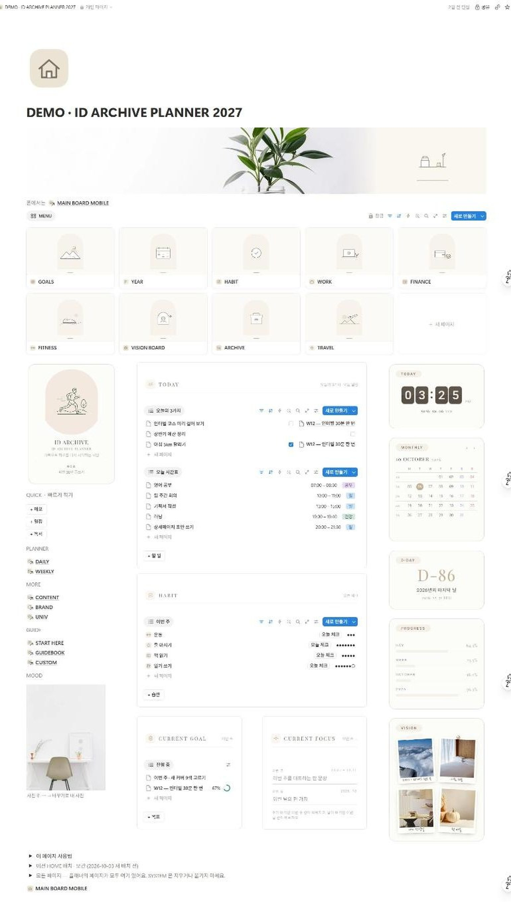
2
HOME · LEFT · CENTER · RIGHT
LEFT = 프로필 · 빠른 버튼 3개 · 짧은 길잡이(메뉴 카드와 겹치는 링크 없음) · 밝은 MOOD 사진. CENTER = TODAY → HABIT → CURRENT GOAL · CURRENT FOCUS(각 모듈 안에 「+ 할 일 · + 습관 · + 목표」). RIGHT = 시계 · 미니 달력 · D-day · 진행률 · VISION — 큰 달 달력 · 날씨 · 음악 · 읽는 중은 HOME 에서 빼고 각 페이지로(휴지통 보관).
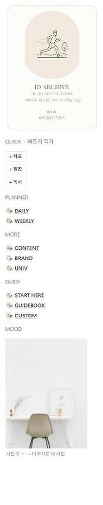
LEFT
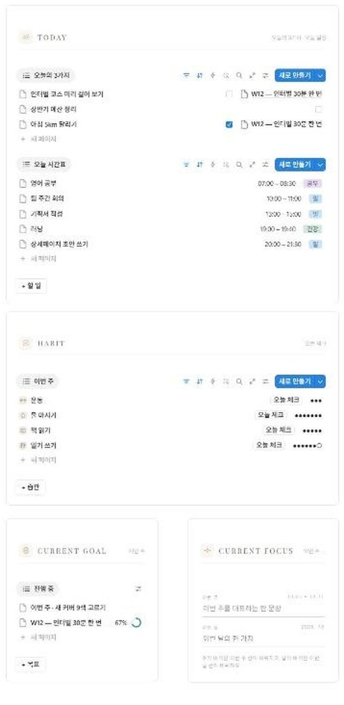
CENTER
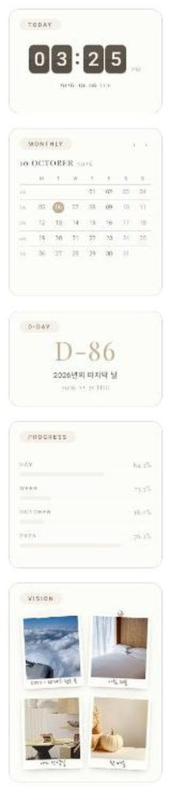
RIGHT
3
TOP MENU DETAIL
실측(1568px 창): 9장 모두 그림 가운데 = 카드 가운데(차이 0px), 이름 기준선 같은 높이(156px), 카드 273 × 186 동일. 이름은 노션 갤러리가 가운데 정렬을 못 해 왼쪽 같은 여백 — 우리 위젯 메뉴로 바꾸면 가운데가 되지만 「사진 눌러 바꾸기」와 노션 안 이동이 깨져서 노션 갤러리를 유지했습니다. 끝의 「+ 새 페이지」 칸도 노션이 숨기지 못하는 칸입니다.
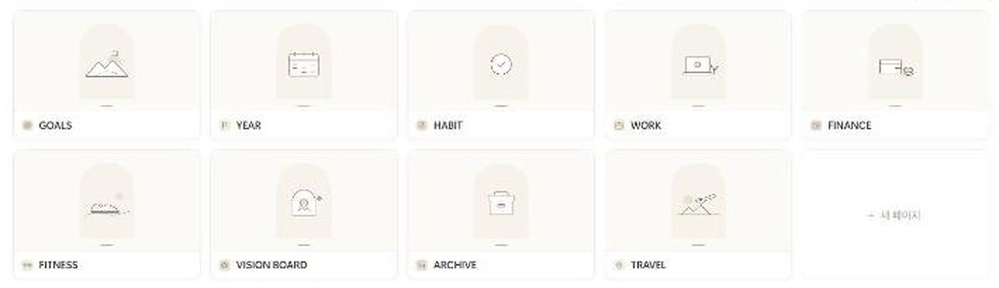
4
IVORY
큰 면 = 흰색 · 아주 옅은 아이보리, 카드 = 거의 흰색, 테마 색은 아이콘 칩 · 오늘 날짜 · 띠의 포인트 선만. 왼쪽 MOOD 의 진한 모래색 사진을 밝은 책상 사진으로 바꿨습니다.
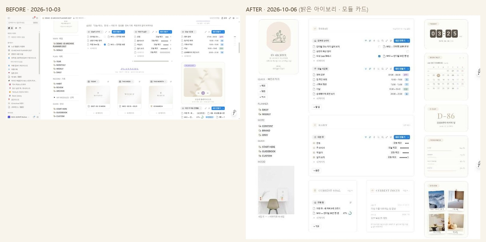
5
IVORY · BLUE · LAVENDER · CUSTOM #8A5A3C
BUYER QA 실제 노션
같은 시험 페이지를 테마만 바꿔 찍었습니다. 사진은 그대로, 면 · 포인트 · 메뉴 그림만 그 색. 구매자 사진(작은 침대 사진 · TRAVEL)은 그대로.
6
CUSTOM HEX DETAIL
포인트 = 고른 HEX 그대로(오늘 날짜 · 주간 칩 · 띠의 선 · 메뉴 그림 아치 밑 선) · 큰 면 = 그 HEX 에서 만든 아주 옅은 색 · 노션 블록 바탕만 가장 가까운 노션 색.
7
USER PHOTO · RESET DEFAULT
구매자 사진은 어떤 색에서도 그대로(사진 · 이름 · 누르면 가는 곳). 지우면 「지금 테마」의 기본 그림으로 — Custom → 파랑 → 아이보리 순서로 확인.
8
MONTHLY
달력 카드는 큰 흰 면(회색 상자 아님) · 제목만 테마 색. 아래 부분은 HOME 과 같은 모듈 카드로 나눴습니다(THIS MONTH · 이 달의 목표 · 프로젝트 · 중요한 날 · 기록 · 돌아보기). 맨 위 큰 사진은 노션 AI 로 만든 업로드 파일(우리 자동화 아님)이라 그대로 두고, 겹치던 우리 띠는 MONTHLY 에서만 뺐습니다.
위 · 달력 카드아래 · 모듈 카드 + 관련 위젯
9
WEEKLY
계획 리듬 사진 띠 · 이번 주 요일별 보드 카드(제목 한 번만) · 아래 섹션은 모듈 카드.
10
GOALS
같은 모듈 카드 언어를 TODAY · HABIT · WORK · FINANCE · UNIV · ARCHIVE 에도 적용(섹션 18개 → 모듈 카드 39개, 각 페이지 「이 페이지」 목록은 모듈 링크). 지평선 사진 띠 · GOAL OVERVIEW 모듈 · 오른쪽은 목표 진행률 · D-day · FOCUS · VISION(핀 사진) · 로드맵. 왼쪽 「이 페이지」 목록은 각 모듈로 가는 링크.
11
MOBILE 390
오늘 디자인 변경 뒤 다시 검사: 폰 페이지 5개 + 데스크톱 HOME · GOALS · MONTHLY · WEEKLY 를 375 · 390 · 430 에서 — 가로로 넘치는 요소 0(옆으로 넘기는 보드 · 갤러리 안은 노션이 일부러 옆으로 넘김). 폰 페이지의 회색 소제목 막대 46개를 데스크톱과 같은 모듈 머리(아이콘 · 제목)로 바꿨습니다.